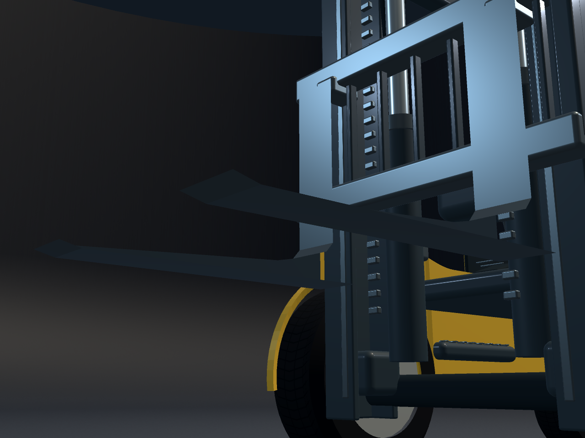
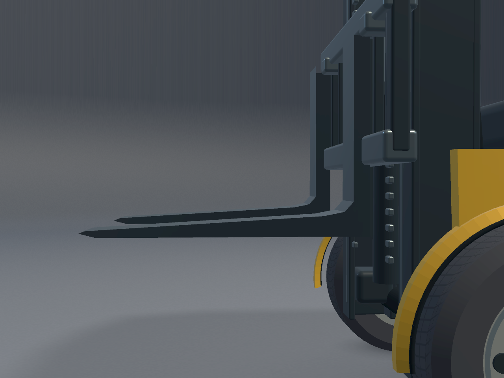
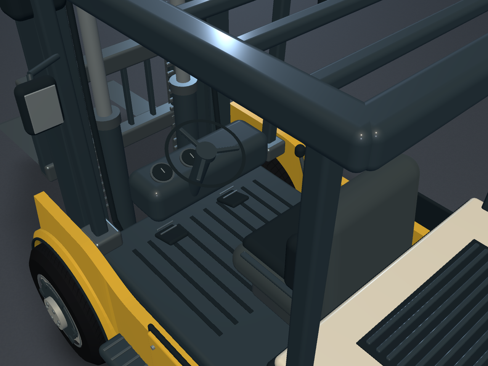
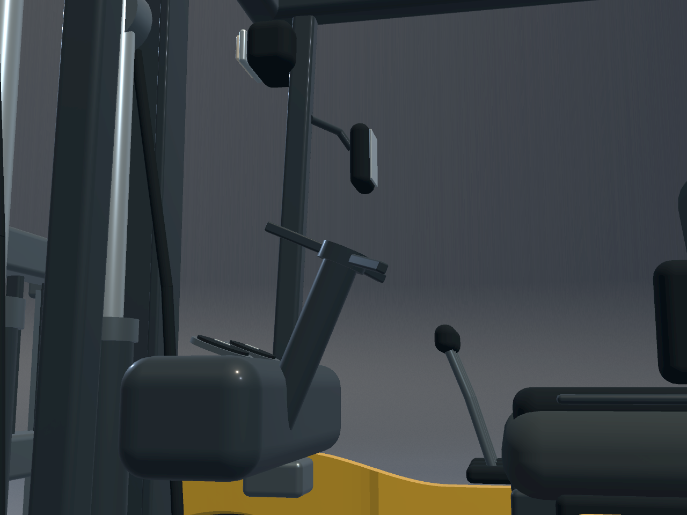
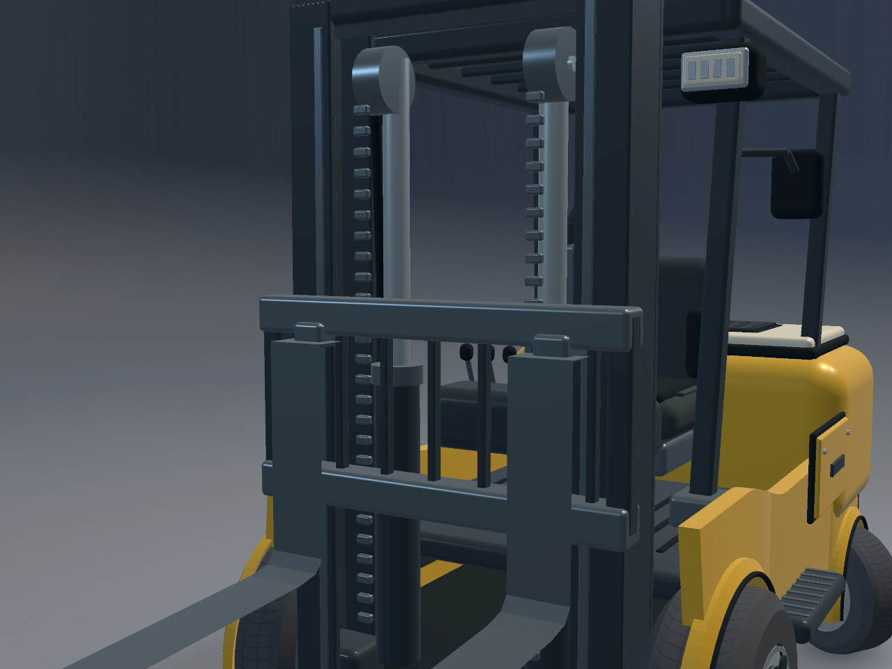
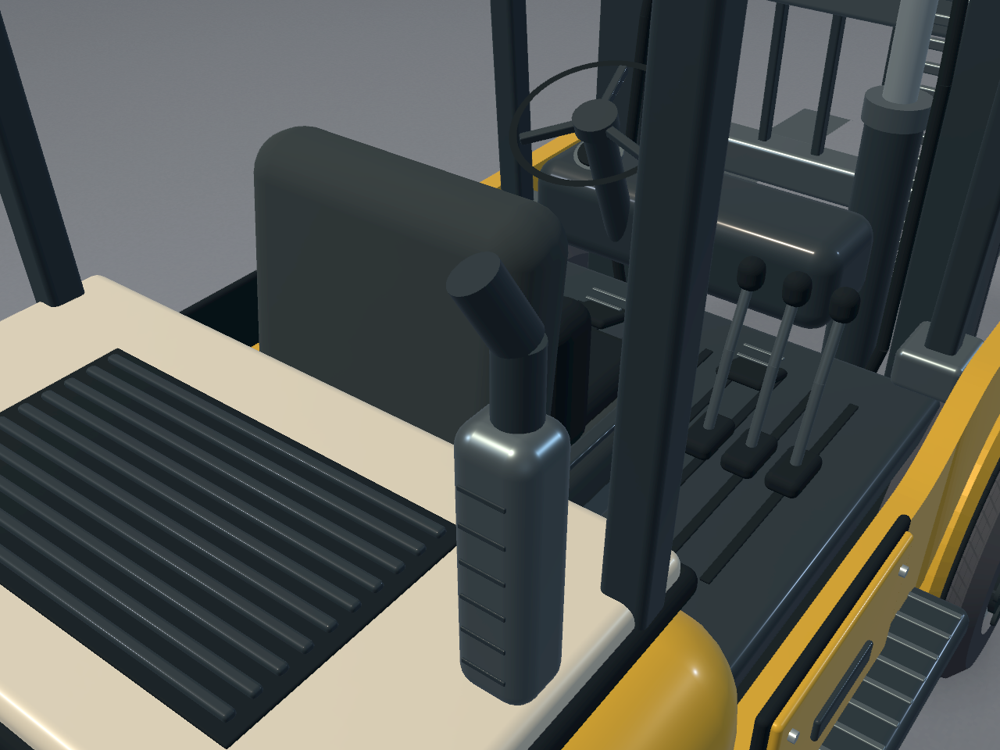
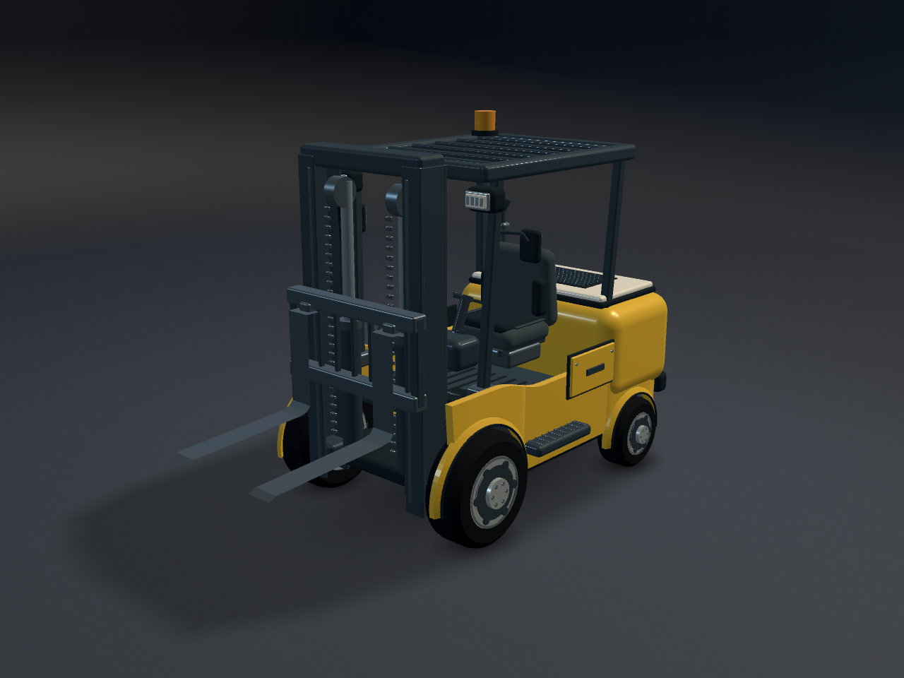
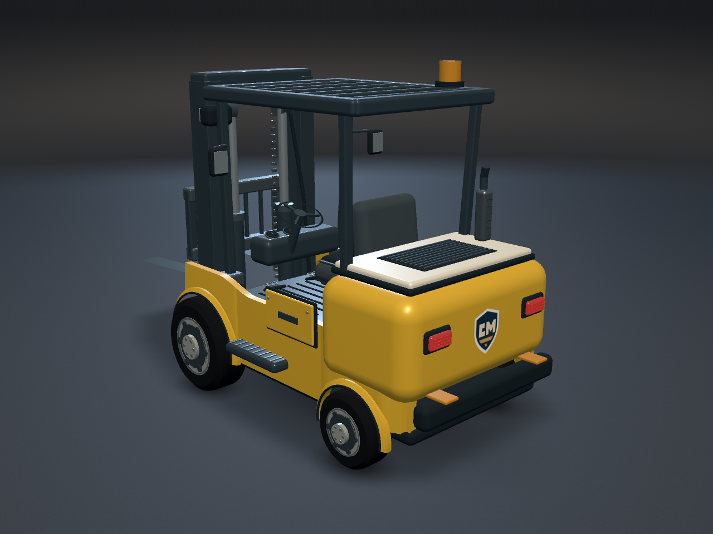
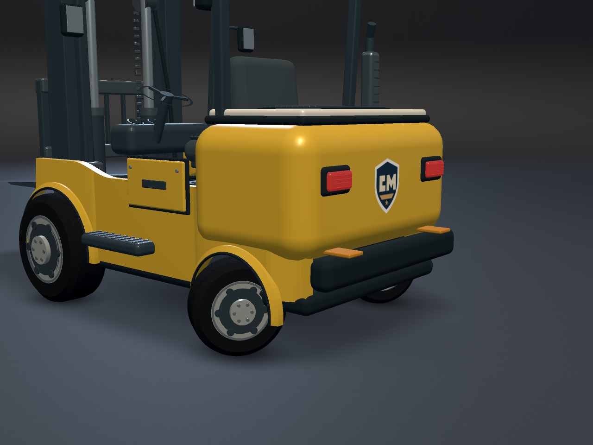

Four findings remain. Production model unchanged. Native Godot 4.7.2 screenshots, captured on desktop in Compatibility and Mobile; these are diagnostic camera views. Full findings, source locations and limitations · Report
Each fork has 14 side triangles facing opposite their outward normals and 18 inconsistent shared edges. Exterior sides are culled, exposing the opposite inner side. Both detail variants are affected.


The hub and spokes remain visible while the single-sided rim vanishes. Replace the flat annulus with a closed round-section rim.



Widely separated blocks do not form a continuous chain, wrap over the pulleys or terminate at the raised carriage.




The side skins and arches pass closure, edge orientation and normal checks. The rear crest is clear; the lower fitting is absent.



No physical-device test or performance certification was performed. Initial diagnostic failure and successful capture logs are retained in logs/.